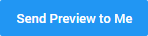

The Message Templates page contains all message (email) templates of a hold. The contents of a hold notice can vary based upon a number of factors including the scope of litigation, the way data is stored, the types of accessible data, and how types of data should be preserved. Nevertheless, we recommend creating carefully designed templates for all message types (the first Hold Notice, a Reminder, Escalation, Awareness Reminder and Lift Notice). This will ensure consistent and complete messages. It will also save time when creating a hold. Templates can always be edited to comply with the specific needs of a hold.
We have the following default templates:
View created message templates and filter/sort them via the columns.
|
|
Note: Filtering/sorting works the same on all pages. |
View a short animation of filtering and sorting on this page: Hold Management.
To add/remove columns, select the Settings icon 
Then, select Columns and (de)select the appropriate columns.
Select 
Define the New Message Template fields. Name, Type, Subject and Importance are mandatory.
Insert placeholders to add relevant links and information from the hold or matter automatically like the Auto-Accept placeholder (Accept Hold by Link) to accept a Hold Notice with one click. Alternatively, you can choose to add a link to the Custodian Portal where a Hold Notice can be accepted as well and also questionnaires can be answered.

Click Save.
Edit a contact via the Edit Message Template icon

Delete a single Message Template via the Delete Message Template icon 
Delete multiple Message Templates by selecting them and clicking the Delete selected Templates icon 
After edit or delete actions, update the Address Book View with the Refresh icon
Preview a Message Template via the Preview Message Template icon 
Select a Hold, a Custodian and a device.
To test the template, select:

Duplicate a Message Template via the Clone Message Template icon
Export all your message templates as CSV, Excel or PDF.
First, select the Settings icon
Then, select Export As... and select the format to which you want to export.
The Message Templates View might have been adjusted by filtering, sorting and/or by a specific selection of columns (via Settings > Columns).
To save this new view, select the Settings icon
Then, select Save View.